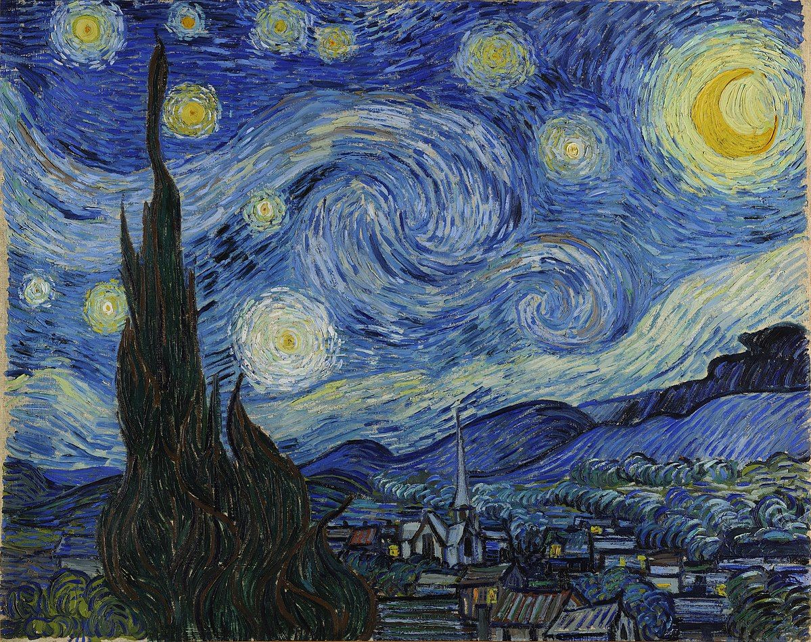
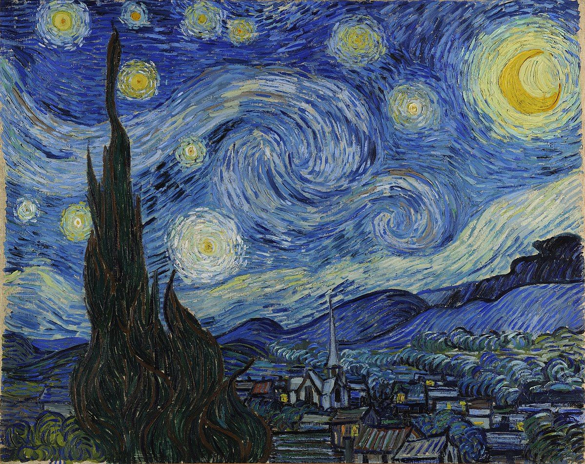

Nikolaos de esparta
Nacionalidad: Griego
Puntaje: 90/100
Descripción: comandante del ejercito espartano, luchó contra los ateniences
y asi ganó su nombre de Nikolaos "el lobo" de esparta
Nombre: La monalisa
Precio: 4.050.850$
Fecha de creacion: 10/5/1820
Descripción: El Retrato de Lisa Gherardini, esposa de Francesco
del Giocondo, más conocido como La Gioconda (La Joconde en francés)
o La Mona Lisa
Nombre: La noche estrellada
Precio: 3.150.850$
Fecha de creacion: 20/6/1930
Descripción: El Retrato de Lisa Gherardini, esposa de Francesco
del Giocondo, más conocido como La Gioconda (La Joconde en francés)
o La Mona Lisa
Nombre: La ultima cena
Precio: 2.050.850$
Fecha de creacion: 30/2/1820
Descripción: La noche estrellada es un óleo sobre lienzo del
pintor posimpresionistaholandés Vincent van Gogh . Pintado en junio
de 1889, representa la vista desde la ventana orientada al este
de su habitación de asilo en Saint-Rémy-de-Provence